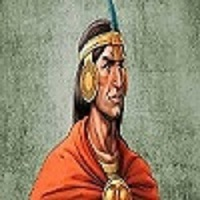
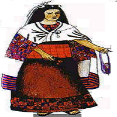
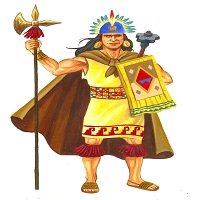

Denominado SapaInca, ejercía una soberanía absoluta y era venerado por su prosapia divina.
Estaba en condición de Intipchurin (Hijo del Sol), era reconocido como Señor de la Tierra y ordenador
del mundo.
El era bondadoso pero severo, castigaba los castigos con un gran sentido de justicia
Cada Inca construía un Palacio donde residian él y sus servidores.

La Coya
Era la esposa legítima del Inca. Normalmente era su hermana de padres.
Normalmente se entretenía con los animales que vivían por ahí. Recogía y hacía ramos de
flores, escuchaba música o danzaba, siempre acompañada por damas de la nobleza o personal
femenino presto a atenderle y servirle.

La sucesión y correinado
Eran generalmente los hijos mayores de los incas y las coyas.
A los príncipes legítimos se les denominaba PIHUICHURI, mientras que el heredero, casado o
soltero recibía el nombre de AUQUI.
El auqui recibía entrenamiento sobre las labores de gobierno, acompañando al soberano en las
diferentes jornadas de administración pública.
Normalmente eran los encargados de realizar las campañas de conquista de nuevos territorios.

Nobleza de sangre
El grupo está conformado por un grupo cerrado de familiares y parientes del inca, que
hallaba en la cumbre de la organización social.
Se les encomendaba todas las funciones del gobierno, clero y ejército. Todos sus miembros
debían demostrar su capacidad y virtudes para el ejercicio del gobierno.
Nobleza de privilegio
Estaba conformada por aquellos personajes del pueblo que habían destacado en el desempeño
de sus funciones y eran ascendidos a criterio del Inca.
Por ejemplo estaban los amautas, los quipucamayoc y guerreros valientes que ganaban
dominios para la monarquía imperial